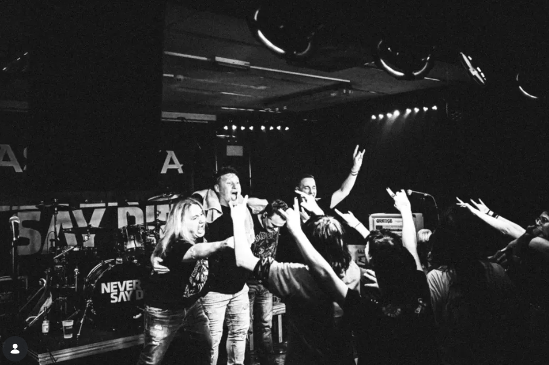
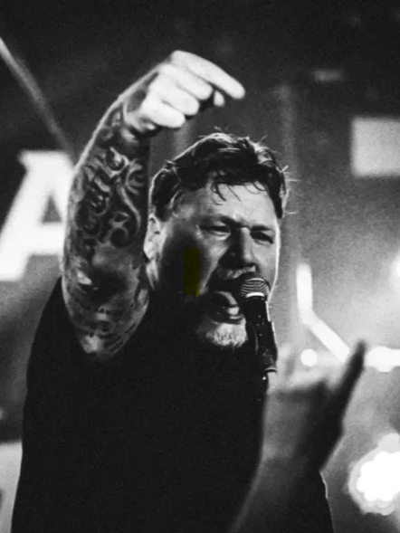

BANDPORTRAIT · 12. NOVEMBER 2026
RECYCLER – HARTE RIFFS, EIGENER SOUND
Hardrock, Stoner Rock und Hard ’n’ Heavy – bei Recycler dreht sich alles um kraftvolle Rockmusik!

ROCKMUSIK MIT EIGENEM CHARAKTER
Recycler bewegt sich musikalisch zwischen Hardrock, Stoner Rock und Hard ’n’ Heavy. Statt bekannte Hits anderer Bands zu interpretieren, konzentrieren sich die Musiker auf ihre eigenen Songs.
Damit steht bei Recycler vor allem eines im Mittelpunkt: Musik mit einer eigenen Identität.
DIE GESICHTER HINTER RECYCLER

KEULE
VOCALS

ROGER KAUFMANN
GUITARS

SVEN SIEBER
BASS

TOBY SPIRIG
DRUMS
RECYCLER LIVE ERLEBEN
Du möchtest wissen, wie Recycler live klingt? Informationen zu kommenden Auftritten findest du auf ihrem Instagram-Profil oder in unserem Eventkalender.
MEHR VON RECYCLER
Du möchtest mehr über die Band erfahren und ihre Musik entdecken?